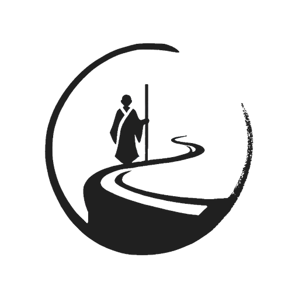

No hay conexión
No podemos cargar el contenido ahora mismo. Revisa tu conexión o vuelve a intentarlo en unos instantes.
- Comprueba que tienes datos o Wi-Fi activo.
- Si ya estabas navegando, vuelve atrás e inténtalo de nuevo.
- Una vez recuperes conexión, recarga la página.